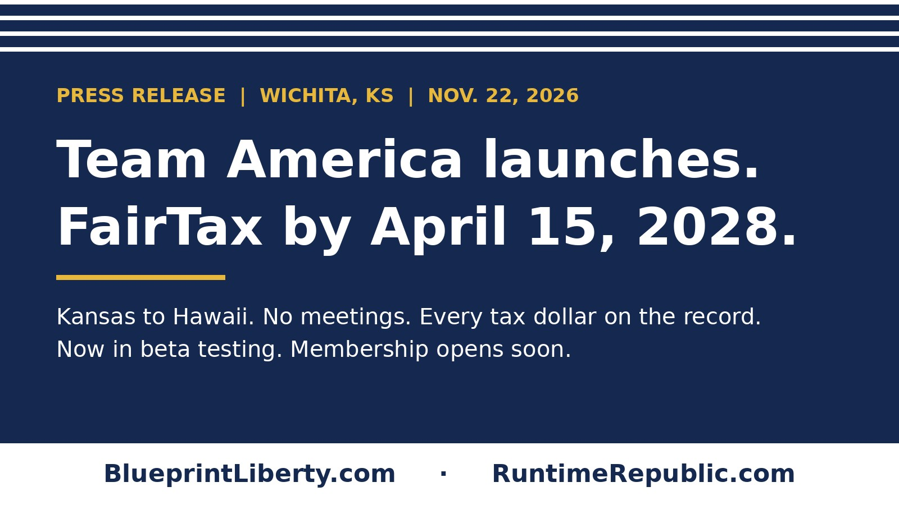

FOR IMMEDIATE RELEASE

WICHITA, Kan. (Nov. 22, 2026) — Runtime Republic, a citizen-led civic technology effort based in Sedgwick County, launched its first national team this weekend. Team America has members from Kansas to Hawaii and one stated goal: pass the FairTax (H.R. 25) on or before April 15, 2028.
Team America is in beta testing with a small group of beta users. It isn't accepting outside members yet, but it is getting ready to open.
The team works the way Runtime Republic says government should: online, in the open, and on the record. Members hold no meetings. They coordinate through public GitHub repositories, and each member uses an AI assistant to read bills, track officials and do the research. All a member needs is a free AI account and a free GitHub account.
"Tax Day 2028 should be the last one under the old system," said James Hodges, founder of Runtime Republic. "We're proving that ordinary citizens with free tools can do the work that used to take a lobbying firm."
The system has set rules that keep political rage posts out. Team members may discuss only the legislative record, candidates' own campaign material on the issues, and statements that were published or recorded and can be verified. Attacks on a candidate's character are off the table. "Social media is for venting," Hodges said. "The system is for work."
Runtime Republic doesn't run its own groups. It writes standards, and independent teams adopt them. Each team governs itself and owns its own risks and results. A property tax group, for example, can line up with two team levels, a statewide team and a county chapter, and each one works independently.
The group is now looking for the first elected officeholder willing to work inside its system, answering taxpayers on the public record.
This weekend Hodges also tested the system on his own finances. He logged every receipt, listed every tax he pays at every level of government, and traced each dollar as far as public records allowed. The trail went cold well before the money reached the place it was spent. "Nobody can tell you where your tax dollars end up," Hodges said. "That's the problem we're solving."
The group also started Every-Tax-Dollar, a draft bill built on the Tenth Amendment that would require a public ledger for every tax dollar. It argues that fraud, waste and hidden spending are not enumerated powers of government. The group also drafted a member agreement that every team signs digitally on GitHub, and it is building automated onboarding so new members can join without an administrator.
To reach the public, Runtime Republic renamed its YouTube channel and launched the Exit Point show. Its first Lean Civics cartoon short, based on a real municipal embezzlement case, is in production.
The group's aim is taxpayer supremacy and total taxpayer telemetry: every citizen able to see where every tax dollar goes, at every level of government. Runtime Republic says taxpayers are the only class in any tax system and should be organized as one. Governments are stewards of tax dollars, not owners. The ultimate goal is a government that protects life, liberty and property. The AGCL Control Documents and the Bible are the controls that guide how the group governs itself.
Runtime Republic writes open standards that independent citizen teams adopt to hold every level of government accountable for taxpayer dollars. Team America membership opens soon.
Media contact: James Hodges, james@RuntimeRepublic.com